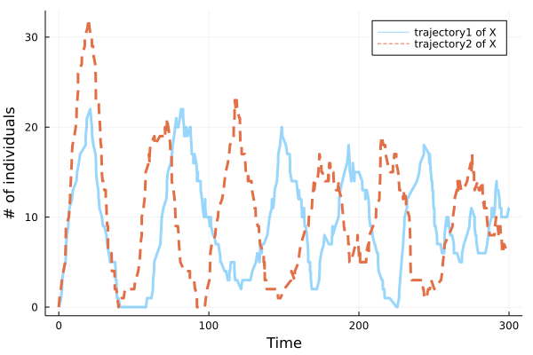
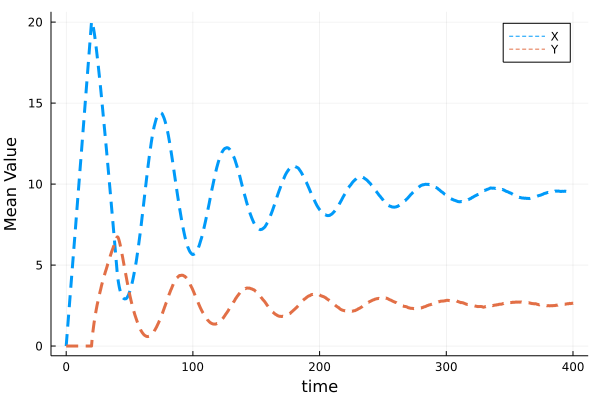

Delay Oscillator
Let us study the following delay oscillatory network.
Model definition
The model is defined as follows:
\[\emptyset \xrightarrow{J_1(Y)} X\\ Y\xrightarrow{J_2(Y)} \emptyset\]
and $\emptyset \xrightarrow{J_1(Y)} X$ will trigger $X\Rightarrow Y$ after $\tau$ time.
According to Neural network aided approximation and parameter inference of non-Markovian models of gene expression, it's an Illustration of a model of auto-regulation whereby a protein $X$ is transcribed by a gene, then it is transformed after a delay time $\tau$ into a mature protein $Y$, which binds the promoter and represses transcription of $X$. The function $J_1(Y)$ and $J_2(Y)$ can be defined as follows:
\[J_1(Y)=k_1S\frac{K^p_d}{K^p_d+Y^p}\\J_2(Y)=k_2E_T\frac{Y}{K_m+Y}\]
In this example, we assume $k_1=k_2=S=E_T=K_d=P=K_m=1$ for convenience.
Define a JumpSet
Since the rate varies with the number of molecules of $Y$, we should define ConstantRateJump
rate1 = (u,p,t) -> 1/(1+u[2]^2)
affect1! = function (integrator)
integrator.u[1] += 1
end
cons_jump1 = ConstantRateJump(rate1,affect1!)
rate2 = (u,p,t) -> u[2]/(1+u[2])
affect2! = function (integrator)
integrator.u[2] -= 1
end
cons_jump2 = ConstantRateJump(rate2,affect2!)rates A function showing how the rate varies with the change of molecules of $Y$.
affect! is a function that shows the net change in the species when the reaction occurs.
Then we can define the JumpSet
jumpset = JumpSet((),(cons_jump1,cons_jump2),nothing,nothing)Define a DiscreteProblem
Then we initialise the problem by setting
u0 = [0,0]
de_chan0 = [[]]
tf = 400.
tspan = (0,tf)
τ = 20.So we can define the DiscreteProblem
dprob = DiscreteProblem(u0, tspan)The same as we did before, we must define the DelayJumpSet
delay_trigger_affect! = function (de_chan, rng)
append!(de_chan[1], τ)
end
delay_trigger = Dict(1=>delay_trigger_affect!)
delay_complete = Dict(1=>[2=>1, 1=>-1])
delay_interrupt = Dict()
delayjumpset = DelayJumpSet(delay_trigger, delay_complete, delay_interrupt)We can see how to define the DelayJumpSet in this example.
So we can define the DelayJumpProblem
djprob = DelayJumpProblem(dprob, DelayRejection(), jumpset, delayjumpset, de_chan0, save_positions=(true,true))where DelayJumpProblem inputs DiscreteProblem, JumpSet,DelayJumpSet, the algorithm we choose and the initial condition of the delay channel de_chan0.
Solution and Visualisation
Now we can solve the problem and plot two trajectories of $X$ and $Y$.
sol_1 = solve(djprob, SSAStepper(), seed = 12345)
sol_2 = solve(djprob, SSAStepper(), seed = 1234)plot(sol_1.t,[sol_1.u[i][1] for i in eachindex(sol_1.u)],alpha=0.4, label="trajectory1 of X",linewidth = 3, legend = :top, ylabel = "# of individuals", xlabel = "Time", fmt=:svg)
plot!(sol_2.t,[sol_2.u[i][1] for i in eachindex(sol_2.u)], label="trajectory2 of X",linewidth = 3, line=:dash, legend = :topright)
plot(sol_1.t,[sol_1.u[i][2] for i in eachindex(sol_1.u)],alpha=0.3, label="trajectory1 of Y",linewidth = 2, legend = :top, ylabel = "# of individuals", xlabel = "Time", fmt=:svg)
plot!(sol_2.t,[sol_2.u[i][2] for i in eachindex(sol_2.u)], label="trajectory2 of Y",linewidth = 2, line=:dash, legend = :topright)
Then we simulate $10^4$ trajectories and calculate the evolution of mean value for each reactant.
using StatsBase
Sample_size = Int(1e4)
ens_prob = EnsembleProblem(djprob)
ens =@time solve(ens_prob,SSAStepper(),EnsembleThreads(),trajectories = Sample_size, saveat = .1, save_delay_channel =false)
mean_X(t) = mean([ens[s](t)[1] for s in 1:Sample_size])
mean_Y(t) = mean([ens[s](t)[2] for s in 1:Sample_size])
timestamps=0:0.1:tf
plot(timestamps,mean_X.(timestamps),linewidth=3,line=:dash,label="X",xlabel="time",ylabel="Mean Value")
plot!(timestamps,mean_Y.(timestamps),linewidth=3,line=:dash, legend = :topright,label="Y")
If we want to see how $Y$ varies when the number of $X$ changes, we will find something interesting.
@gif for i in 1:200
plot(mean_X,mean_Y,0,i, linewidth=range(0, 5, length = 200),seriesalpha=range(0, 1, length = 200),xlim=(0,21),ylim=(0,7),label=false,xlabel="X",ylabel="Y")
end
Reference
[1]Jiang, Q., Fu, X., Yan, S. et al. Neural network aided approximation and parameter inference of non-Markovian models of gene expression. Nat Commun 12, 2618 (2021). https://doi.org/10.1038/s41467-021-22919-1